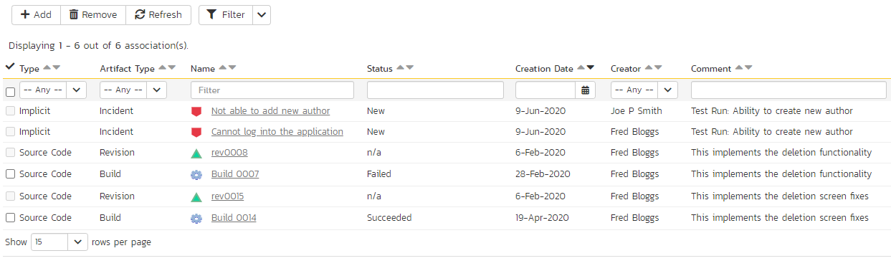

Requirements Management
This section outlines how the requirements management features of SpiraPlan® can be used to develop a requirements / scope matrix for a product, and how you can map any existing test-cases to the requirements. Typically when starting a product, developing the requirements list is the first activity after the Administrator has set up the product in the system.
Requirements List
When you click on the Planning > Requirements link on the global navigation bar, you will initially be taken to the requirements list screen illustrated below:

The requirements list consists of a hierarchical arrangement of the various requirements and functionalities that need to be provided by the system in question. The structure is very similar to the Work Breakdown Structure (WBS) developed in Microsoft Product®, and users of that software package will find this very familiar to use. When you create a new product, this list will initially be empty, and you will have to start using the "Insert" button to start adding requirements.
Requirements come in two main flavors: summary items shown in bold-type, and detail items shown in normal-type with a hyperlink. When you indent a requirement under an existing requirement, the parent is changed from a detail-item to a summary-item, and when you outdent a child item, its parent will return to a detail-item (assuming it has no other children). This behavior is important to understand, as only detail items are assigned a status themselves; the summary items simply display an aggregate of the worst-case assessment of their children's status. Both summary and detail items can be mapped against test-cases for test-coverage, in addition the summary items display an aggregate coverage status.
Each requirement is displayed along with its importance/priority (ranked from "Critical" to "Low"), its completion status (from "Requested" to "Completed"), the version of the software that the requirement is planned for, and graphical indicators that represents its test coverage status and its task progress.
For those requirements that have no test-cases covering them (i.e. validating that the requirement works as expected) the indicator consists of a white solid bar, bearing the legend "Not Covered". For those requirements that have at least one test-case mapped against them, they will display a block graph that illustrates the last execution status of each of the mapped test-cases. Thus if the requirement is covered by two test cases, one of which passed, and one of which wasn't run, the graph will display a green bar (50% passed) and an equal length gray bar (50% not run). To determine the exact requirements coverage information, position the mouse pointer over the bar-chart, and the number of covering tests, along with the pass / fail / blocked / caution / not-run breakdown will be displayed as a "tooltip".
For those requirements that have at least one task associated with them, they will display a block graph that illustrates the relative numbers of task that are on-schedule (green), late-starting (yellow), late-finishing (red) or just not-started (grey). These values are weighted by the effort of the task, so that larger, more complex tasks will be change the graph more than the smaller tasks. To determine the exact task progress information, position the mouse pointer over the bar-chart and the number of associated tasks, along with the details of how many are in each status will be displayed as a "tooltip".
Insert
Clicking on the <Insert> icon inserts a requirement above the currently selected requirement -- i.e. the one whose check-box has been selected, at the same level in the hierarchy. If you want to insert a requirement below an existing item, you can use the Insert > Child Requirement option instead. If you insert a requirement without first selecting an existing requirement from the list, the new requirement will simply be added at the end of the list. Note that if the full list of requirements are paginated, the new requirement will be at the bottom of the last page.
Once the new requirement has been inserted, the item is switched to "Edit" mode so that you can rename the default name and choose a priority, status and/or author.
Delete
Clicking on the "Delete" button deletes all the requirements whose check-boxes have been selected. If any of the items are summary items, the child requirements are also deleted. If all the children are deleted from a summary item, it changes back into a non-summary item.
Indent
Clicking on the "Indent" button indents all the requirements whose check-boxes have been selected. If any of the items are made children of a requirement that had no previous children, it will be changed from a detail item into a summary item.
Outdent
Clicking on the "Outdent" button de-indents all the requirements whose check-boxes have been selected. If any of the items were the only children of a summary requirement item, then that item will be changed back from a summary item to a detail item.
Refresh
Clicking on the "Refresh" button simply reloads the requirements list (not the entire page). This is useful as other people may be modifying the list of requirements at the same time as you, and after stepping away from the computer for a short-time, you should click this button to make sure you are viewing the most current requirements list for the product.
Edit
Each requirement in the list has an "Edit" button display in its right-most column. When you click this button or just double-click on any of the cells in the row, you change the item from "View" mode to "Edit" mode. The various columns are made editable, and "Update" buttons are displayed in the last column:

If you click "Edit" on more than one row, the "Update" buttons are only displayed on the first row selected. You can make changes to all the editable rows and then update the changes by clicking the one "Update" button. Also, if you want to make the same change to multiple rows (e.g. to change five requirements from "In Progress" status to "Completed"), you can click on the "fill" icon to the right of the editable item, which will propagate the new value to all editable items in the same column.
If you want to edit lots of items, first select their checkboxes and then click the [Edit] button on the same row as the Filters and it will switch all the selected items into edit mode.
When you have made your updates, you can either click "Save" to commit the changes, or "Cancel" to revert back to the original information. Alternatively, pressing the <ENTER> key will commit the changes and pressing the <ESCAPE> key will cancel the changes.
Show Level
Choosing an indent level from the 'Show Level' drop down box allows you to quickly and easily view the entire requirements list at a specific indent level. For example you may want to see all requirements drilled-down to the third level of detail. To do this you would simply choose 'Level 3' from the list, and the requirements will be expanded / collapsed accordingly.
Filtering
You can easily filter the list of requirements as illustrated in the screen-shot below:

To filter the list by any of the displayed columns, you either choose an item from the appropriate drop-down list or enter a free-text phrase (depending on the type of field) then click the <Filter> icon or press the <ENTER> key to apply the different filters. Note that the name field is searched using a "LIKE" comparison, so that searching for "database" would include any item with the word database in the name. The other freetext fields need to be exact matches (e.g. dates, requirement numbers). In the screen-shot above, we are filtering on Status = Requested.
In addition, if you have a set of filters that you plan on using on a regular basis, you can choose the option Filter > Save Filter to add the current filter to the list of saved filters that appear on your 'My Page'. If you would like to share the filter with other members of the product, choose the "Share with other members of the product" option. The list of saved filters can also be retrieved by clicking Filter > Retrieve Filter:

As a shortcut, the left hand panel includes a set of Quick Filters that can be applied in a single-click:
-
The topmost section -- This displays any saved requirement filters created by the current user alongside any 'shared' filters. The latter are marked with an icon showing a group of people.
-
Components -- This section lists the components defined for the current product. Clicking on any of the components in the list will filter the requirements to only show those that belong to the selected component.
-
Releases -- This section lists the releases and sprints defined for the current product. Clicking on any of the releases or sprints in the list will filter the requirements by that release/sprint.
Show / Hide Columns
This drop-down list allows you to change the fields that are displayed in the requirement list as columns for the current product. To show a column that is not already displayed, simply select that column from the list of "Show..." column names and to hide an existing column, simply select that column from the list of "Hide..." column names. This is stored on a per-product basis, so you can have different display settings for each product that you are a member of. The fields can be any of the built-in fields or any of the custom properties set up by the product owner.
Copying Requirements
To copy a requirement or set of requirements, simply select the check-boxes of the requirements you want to copy and then select the Edit > Copy Items menu option. This will copy the current requirements selection to the clipboard. Then you should select the place where you want the requirements to be inserted and choose the Edit > Paste Items option.
The requirements will now be copied into the destination location you specified. The name of the copied requirements will be prefixed with "Copy of..." to distinguish them from the originals. Note that copied requirements will also include the test coverage information from the originals.
Moving Requirements
To move a requirement in the requirements hierarchy, there are two options:
- Click on the requirement you want to move and then drag it to the location you want it moved. An empty space will appear to show you where it will be inserted:

Once you have the requirement positioned at the correct place that you want it inserted, just release the mouse button. To move multiple items simply select their checkboxes and then drag-and-drop one of the selected items.
- Alternatively, you can select the check-boxes of the requirements you want to move and then select the Edit > Cut menu option. This will cut the current requirements selection to the clipboard. Then you should select the place where you want the requirements to be inserted and choose the Edit > Paste option. The requirements will now be moved into the destination location you specified.
Exporting Requirements
To export a requirement or set of requirements from the current product to another product in the system, all you need to do is select the check-boxes of the requirement(s) you want to export and then click the Tools > Export To Product button. This will then bring up a list of possible destination products:
Once you have chosen the destination product and clicked the "Export" button, the requirements will be exported from the current product to the destination product. Any file attachments will also be copied to the destination product along with the requirements.
Creating Test Cases from Requirements
To quickly create test cases from a group of requirements, all you need to do is select the check-boxes of the appropriate requirements and then click Tools > Create Test Cases. This will then create new test cases based on the selected requirements.
Creating a Test Set from Requirements
To quickly create a new test set from a group of requirements, all you need to do is select the check-boxes of the appropriate requirements and then click Tools > Create Test Set. This will then create new test set containing the test cases that are already mapped to the selected requirement(s).
Printing Items
To quickly print a single requirement or list of requirements you can select the items' checkboxes and then click Tools > Print Items. This will open a new window containing a printable version of the selected items.
Focus-On Branch
Sometimes you will a list of filtered requirements displayed and you would like to view all of the items that in the same branch of the requirements tree, even those that don't match the current filter. To view the branch, select the checkbox of the branch and then click Tools > Focus on, and the system will clear the current filters and then expand just the selected branch.
Right-Click Context Menu
SpiraPlan® provides a shortcut -- called the context menu - for accessing some of the most commonly used functions, so that you don't need to move your mouse up to the toolbar each time. To access the context menu, right-click on any of the rows in the requirements list and the following menu will be displayed:

You can now choose any of these options as an alternative to using the icons in the toolbar.
Viewing Requirements from Shared Products
If you are displaying the requirements list for a product has required shared from other products, you will see the option on the top-right to view the requirements from the shared product(s):

If you choose the option to show the requirement from 'All Products' and not just the current product, the shared products are displayed, grouped under the name of the product they are being shared from:

Note: Any requirements shared from other products will be read-only and won't display any of their custom properties. However you can expand/collapse these shared requirements and filter using the standard fields.
Requirement Details
When you click on a requirement item in the requirements list described in Requirements Management > Requirements List, you are taken to the requirement details page illustrated below:
This page is made up of three areas;
-
the left pane displays the requirements list navigation;
-
the right pane's header, which displays: the operations toolbar; the editable name of the selected requirement; and the info bar (with a shaded background), which also contains the workflow status transitions (see below); and
-
the right pane's tabbed interface with rich information related to the requirement.
Please note that on smaller screen sizes the navigation pane is not displayed. While the navigation pane has a link to take you back to the requirements list, on mobile devices a 'back' button is shown on the left of the operations toolbar.
The navigation pane can be collapsed by clicking on the "-" button, or expanded by clicking anywhere on the gray title area. On desktops the user can also control the exact width of the navigation pane by dragging and dropping a red handle that appears on hovering at the rightmost edge of the navigation pane.
The navigation pane shows a list of the peer requirements to the one selected. This list is useful as a navigation shortcut; you can quickly view the coverage information of all the peer requirements by clicking on the navigation links without having to first return to the requirements list page. The navigation list can be switched between three different modes:
-
The list of requirements matching the current filter
-
The list of all requirements, irrespective of the current filter
-
The list of requirements assigned to the current user
On the main right hand side of the page, which of the fields for the currently selected requirement are available and which are required will depend on your stage in the requirement workflow. For example, a requested requirement might not require a "Release" whereas a planned requirement could well do. The types of change allowed and the fields that are enabled/visible/required will depend on how your product administrator has set up the system for you. Administrators should refer to the SpiraPlan Administration Guide for details on configuring the requirement workflows to better meet their needs.
Depending on the user's role and whether they are listed as the owner or author of the requirement, displayed in the info bar beneath the requirement name is the current workflow status and an "operations" button which, when clicked, will show a set of allowed workflow operations:

These workflow transitions allow the user to move the requirement from one status to another. For example when the requirement is in the Developed status, you will be given the options to:
Continue Development -- changes status to "In-Progress"
Mark as Completed -- changes the status to "Completed"
Mark as Tested- changes the status to "Tested"
After changing the status of the requirement by clicking on the workflow link, you can then fill in the additional fields that are now enabled and/or required. Once you've made the changes to the appropriate requirement fields, you can either click "Save", "Save and Close", or "Save and New" to commit the changes or "Refresh" to discard the changes and reload the requirement from the database. In addition you can print the current requirement by clicking "Print", which will display a printable version of the page in a separate window.
Please note that if digital signatures have been enabled for a particular workflow operation (and therefore a digital signature is required to confirm the status change. Workflow operations requiring a digital signature are marked with a padlock icon:

On attempting to save changes made after clicking a workflow operation that requires a digital signature you will be presented with the following popup:

Using the "Email" button on the toolbar, you can send an email containing details of the requirement to an email address or another user on the system:

You can specify the subject line for the email, and either a list of email addresses, separated by semicolons, or an existing product user .The content of the email is specified in the System Administration -- Notification Templates.
To be notified of any changes made to the current artifact via email, click the "Subscribe" button. If you already subscribed, the button will instead let you "Unsubscribe" to stop receiving emails about that particular artifact. Depending on your role, you may also see a dropdown arrow to the right of this button. This will let you subscribe others in the product to this artifact.
The bottom part of the right pane can be switched between six views: "Overview", "Test Coverage", "Tasks", "Attachments", "History" and "Associations", each of which will be described in more detail below.
Overview - Details
The Overview tab is divided into a number of different sections. Each of these can be collapsed or expanded by clicking on the title of that section. It displays the description, fields and comments associated with the requirement.
The top part of this tab displays the various standard fields and custom properties associated with the requirement. Fields (both standard and custom) are grouped under the collapsible headings (marked by orange text and underline) in the screenshot below. For instance, all fields regarding dates are grouped together in the "Dates and Times" area.

Followers
Using the "Subscribe" button on the toolbar, you can quickly follow the item, and receive updates on certain changes to it. Depending on your role, you may also see a dropdown to this button, which let's you add another product member as a follower to this item.


You can also quickly see who is following an incident under the "People" section in the Overview tab.

To view information about the follower, or to unfollow them from the item, hover over their avatar to display a user profile card.

Overview -- Detailed Information
The Detailed Information section contains the long, formatted description of the requirement, as well as any rich text custom fields. You can enter rich text or paste in from a word processing program or web page into these fields. Clicking on the shaded areas of one of these detailed fields will display the rich text toolbar.

Overview - Comments
The Comments section allows you to add and view discussions relating to the requirement:

Existing comments are displayed in order underneath the textbox in date order (either newest first or oldest first). To add a new comment, enter it into the textbox, and click the "Add Comment" button.
Overview -- Scenario
If you are editing a 'Use Case' type of requirement, there will be a special 'Scenario' section where you can enter in the scenario steps that define the use case:

This section displays the various steps that a user would perform when carrying out the defined use case. The list of use case steps displays the position number, and the description. If a test case is created from this use-case, the steps will be used to create the test steps.
Clicking on the "Insert Step" button inserts a new step before the currently selected (by means of the check-box) step. Clicking the "Insert Step" button without selecting an existing step will insert a new step at the end of the list. When a new step is inserted, the fields are displayed in "Edit" mode, so the description, field is editable, allowing you to enter the data:

To move the steps in the list, click on the step you want to move and drag it to the location you want it moved.
Test Coverage
This tab shows the test coverage information for the requirement in question:

The tab displays a grid containing the test cases already mapped to this requirement. You can filter that list by the test case type, name, status, execution status, execution date, priority, product name and ID. You can remove an existing test case by selecting its check box and clicking the 'Delete' button. This doesn't delete the test case, just removes it from the requirement.
Hovering the mouse over the names of the test cases will display a "tooltip" consisting of the test case name, place in the folder structure and a detailed description.
To add a new test case to the requirement, simply click on the 'Add' button:

You can search for a test case by its ID if you know it (make sure to include the "TC" prefix):

Otherwise, you can search for the test cases by choosing a folder from the dropdown and/or entering a partial name match:
One you have found the desired test case(s), simply select their check boxes and click the 'Save' button to add them to the current requirement:

Finally, as a shortcut you can click the "Create Test Case from This Requirement" button to create a new test case in the list of covered test cases that will be automatically linked to this requirement. This is useful when you have created a new requirement and want to generate an initial covering test to be fleshed-out later.
Tasks
This tab shows the list of product tasks that need to be completed for the requirement to be satisfied:

Each of the tasks is displayed together with, by default, its name, description (by hovering the mouse over the name), progress, priority, start-date, current owner, estimated effort, producted effort and numeric task identifier. Clicking on the task name will bring up the Task Details page. This allows you to edit the details of an existing task.
You can perform the following actions on a task from this screen:
New Task -- inserts a new task in the task list with a default set of values. The task will be associated with the current requirement.
Remove -- removes the task from this requirement without actually deleting the task
Refresh -- updates the list of tasks from the server, useful if other people are adding tasks to this requirement at the same time.
Filter / Apply Filter -- Applies the entries in the filter boxes to the list of tasks
Clear Filters -- Clears the current filter, so that all tasks associated with the current requirement are shown.
Edit -- Clicking the "Edit" button to the right of the task allows you to edit the task inline directly on this screen. Only columns visible will be editable.
Show/Hide Columns -- Allows you to choose which Task columns are visible
The system has a series of shortcuts that simplify the editing of requirements and tasks:
If you create a new task on the requirements page, the priority, release/sprint and owner are automatically copied from the parent requirement. You can change these suggested values before clicking "Save"
When you assign a release/sprint to a requirement, its status automatically changes to "Planned"
When at least one task assigned to the requirement changes from "Not Started" to "In Progress", the parent requirement automatically switches from "Planned" to "In Progress"
When all the tasks under the requirement are completed, the parent requirement will switch to the "Completed" status.
If you manually move a requirement that has no associated tasks from "Planned" to "In Progress", the system will automatically generate one task under the requirement and use the requirement's planned effort field to generate the task's estimated effort.
Attachments
The attachment tab displays the list of documents, screenshots or web-links (URLs) that have been "attached" to the requirement. The documents can be in any format, though SpiraPlan® will only display icons for certain known types.

The attachment list includes the filename/URL that was originally uploaded together with the file-size (in KB), name of the person who attached it and the date uploaded. In addition, if you position the pointer over the filename and hold it there for a few seconds, a detailed description is displayed as a tooltip.
To actually view the document, click on the filename hyperlink and a new web browser window will open. Depending on the type of file, this window will either display the document / web-page or prompt you for a place to save it on your local computer. To remove an existing attachment from a requirement, simply click the "Remove" button and the attachment will be removed from the list. Using the standard filter/sort options you can also sort and filter the list of attachments to make it more manageable.
If you are using SpiraPlan or SpiraTeam (but not SpiraTest) you can also choose to include file attachments stored in a linked version control system (e.g. Git, Subversion, CVS, Perforce, etc.) by selecting the "Include Source Code Documents" option.
To attach a new document to the requirement, you need to first click the "Add New" button to display the new attachment dialog box:

There are three different types of item that can be attached to a requirement:
To upload a file, choose "File" as the type and then click the Browse button and select the file from your local computer, optionally enter a detailed description then click the "Upload" button. The document will be copied from your computer and attached to the artifact.
To attach a web-link (URL) to the artifact, you need to choose "URL" as the type and then enter the fully qualified URL (e.g. http://mywebsite.com?Document=1), an optional description and then click the "Upload" button to attach the web-link.
To attach a screenshot to the artifact, you need to choose "Screenshot" as the type and then copy the image to your computer's clipboard (e.g. on Windows computers, the PRINT SCREEN button captures the current page and adds to the clipboard). Once the image is in the clipboard, paste it into the editor using CTRL+V (or the equivalent keystroke for your operating system) and the item will appear in the preview window. You can then fill in the other fields and click "Upload" to attach the image.
Note: If you are using a non-Windows® computer (e.g. Macintosh®) that doesn't put file extensions on filenames (e.g. .xls for an Excel sheet) automatically, then you will need to manually add the file extension to the filename before uploading if you want it to be displayed with the correct icon in the attachment list.
You can also associate an existing document (that's already stored in SpiraTeam) with the requirement. To do that, click on the "Add Existing" button to bring up the add file association dialog box:


You can then choose to either associate a document stored in the SpiraPlan Documents repository or (in the case of SpiraPlan/SpiraTeam but not SpiraTest) from the linked source code repository. In either case you first select the appropriate folder, and then pick the document(s) from the file list on the right. In the case of a source code file association you can also add a comment.
History
This tab displays the list of changes that have been performed on the requirement artifact since its creation. An example requirement change history is depicted below:

The change history displays the date that each change was made, together with the fields that were changed, the old and new values and the person who made the change. This allows a complete audit trail to be maintained of all changes in the system. In addition, if you are logged in as a product administrator you can also click on the "Admin View" hyperlink to revert any unwanted changes.
Associations
This displays a list of any incidents, source code revisions or other requirements that are associated with this requirement:

The requirements in this list are those a user has decided are relevant to the current one and has created a direct link between them. In the case of incidents, the association can be either due to the creator of an incident directly linking the incident to the requirement, or it can be the result of a tester executing a test-run and creating an incident during the test run. In this latter case, the check-box to the left of the association will be unavailable as the link is not editable.
Each association is displayed with the type of association (related-to, vs. a dependency), name of the artifact being linked-to, type of artifact (requirement, incident, etc.), the name of the person who created the association, and a comment that describes why the association was made. In the case of an indirect association due to a test run, the comment will contain the name of the test run.
In addition, when using SpiraPlan or SpiraTeam, the system automatically scans the source code repository for any revisions that are linked to this artifact.
You can perform the following actions on an association from this screen:
Delete -- removes the selected association to the other artifact. This will only delete the association, not the linked artifact itself.
Refresh -- updates the list of associations from the server, useful if other people are adding associations to this requirement at the same time.
Filter / Apply Filter -- Applies the entries in the filter boxes to the list of associations
Clear Filters -- Clears the current filter, so that all associations for the current requirement are shown.
Edit -- Clicking the "Edit" button to the right of the associations allows you to edit the association type and comment fields inline directly on this screen.
To create a new association, click the "Add" button to display the add association panel:

If you know the ID of the requirement or incident you want to associate, you can enter its ID prefixed by the appropriate token ("RQ" for requirement or "IN" for incident):

Otherwise you should choose the Artifact Type (and Product if making a cross-product association):

You can narrow down your search by entering a keyword:

For requirements, you can also choose a package from the list to narrow down the results:

Once you have a list of artifacts, you should select the checkboxes of the items you want to associate with the current requirement and click the 'Save' button.
You can add a comment that explains the rationale for the association and choose the type of association being created:
-
Related-to: this is used to specify that the two artifacts are simply related
-
Depends-on: this is used to specify that the current artifact has a dependency on the one being linked to.